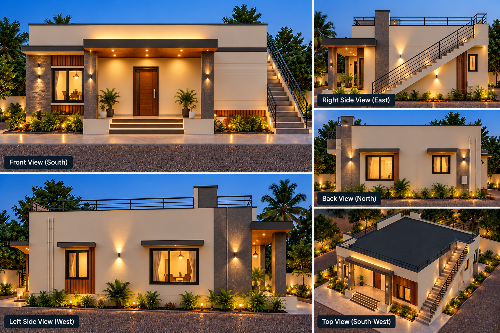

⌂
HOUSE / 01
Tamil’s 2BHK · measured concept
—
sq ft main house
2
bedrooms
Reference image ↗
Building your home…
FURNISHED CUTAWAY
Whole house
Finished-face room sizes · 15 × 6 ft sit-out · independent staircase
Drag to rotate · Scroll to zoom · Right-drag to pan
↺ Reset view
↓ Save image
↑
←
↓
→
+
✕ Close

Modern Bungalow Design Board · Design reference image.